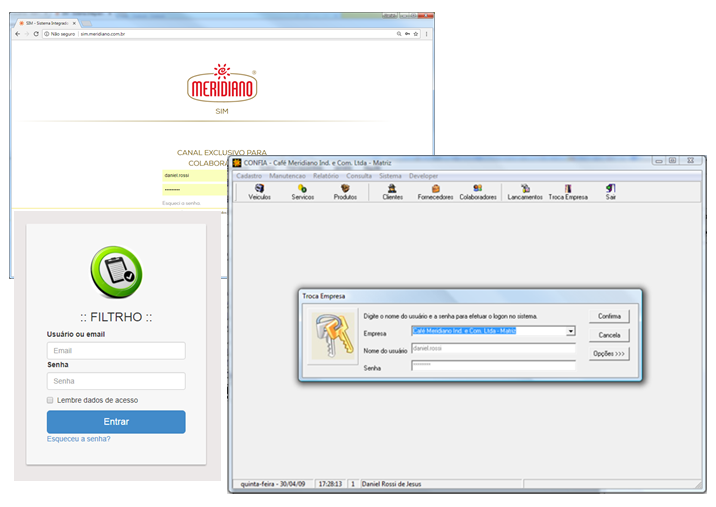

O CONFIA, SIM, FILTRHO, ROTA e outros, são serviços mantidos pelo Meridiano para seus funcionários e ao usá-lo você deverá ter uma conduta coerente ao código de ética da empresa.
Os serviços disponibilizados são de uso profissional. Não se deve usar essas ferramentas para nenhuma finalidade particular, para fins ilegais ou não autorizados. As informações acessadas possuem direitos autorais e o uso inadequado estará sujeito às penalidades previstas em lei. Você é o único responsável por sua conduta.
As informações geradas e acessadas não devem ser utilizadas para fins não autorizados.
Você é responsável por toda e qualquer atividade realizada sob o seu login e senha. Procure manter seus dados de acesso em segurança.
